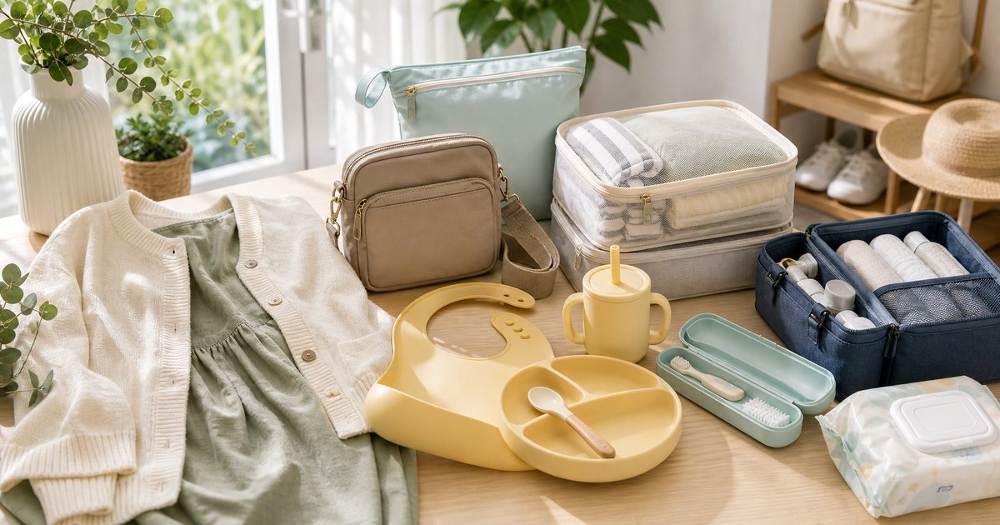

Elite Fashion｜親子外出與生活小物：餐具、口腔清潔、孕產穿搭與外出包配置
親子外出用品不一定要買滿。先分用餐、清潔、備用衣物、孕產穿搭與外出包，才能讓每次出門少一點慌亂。

先分外出半天、一天與過夜三種包
親子外出時間長短不同，用品量也不同。半天不需要帶成過夜包，過夜也不能只靠小包硬撐。
可以把 2angels、牙齒寶寶、Babyshare、MiffyBaby、寶寶共和國與 S′AIME 放在同一個生活情境裡比較，但要先分清楚用途。編輯部會看保存、尺寸、清潔、是否容易收納、是否適合家中成員共同使用，而不是把清單寫成越多越完整。
比較穩妥的順序是先確認 出門時間、用餐次數、是否需要換洗衣物。常見失誤是 每次都帶最大包，最後找東西更慢；在 親子餐廳、長輩家、旅行與例行看診 裡，能被穩定使用、容易補貨、看得懂限制的品項，通常比一次買很多更實際。
- 半天包只保留必要用品。
- 過夜包和日常外出包分開整理。
餐具要看清洗、收納與是否外帶
矽膠餐具、圍兜或外出餐具要看清洗方式、是否容易裝回袋中，以及用完後怎麼帶回家。
可以把 2angels、寶寶共和國、MiffyBaby 與 SUSS Living 放在同一個生活情境裡比較，但要先分清楚用途。編輯部會看保存、尺寸、清潔、是否容易收納、是否適合家中成員共同使用，而不是把清單寫成越多越完整。
比較穩妥的順序是先確認 餐具是否容易清洗、是否有收納盒、是否適合外食。常見失誤是 只看可愛外型，忘了用完後要收回包裡；在 親子餐廳、長途車程與長輩家用餐 裡，能被穩定使用、容易補貨、看得懂限制的品項，通常比一次買很多更實際。
- 外出餐具要有濕用後收納方式。
- 家用和外出餐具可分兩套。
口腔清潔用品要放固定小袋
口腔清潔用品容易細小又分散，適合放在固定小袋中。外出、過夜和家中用品可以分開，避免每次出門從浴室拆。
可以把 牙齒寶寶、MiffyBaby、寶寶共和國與 S′AIME 放在同一個生活情境裡比較，但要先分清楚用途。編輯部會看保存、尺寸、清潔、是否容易收納、是否適合家中成員共同使用，而不是把清單寫成越多越完整。
比較穩妥的順序是先確認 是否過夜、是否需要備用、用品是否能保持乾燥。常見失誤是 臨出門才從浴室拿，回家後又忘了放回去；在 外宿、旅行、幼兒園前後與長輩家 裡，能被穩定使用、容易補貨、看得懂限制的品項，通常比一次買很多更實際。
- 外出口腔用品獨立成袋。
- 乾燥和替換週期依商品標示處理。
孕產穿搭要看行程，不只看款式
孕產穿搭和親子外出用品常被分開看，但實際上會一起影響出門順不順。衣物要能配合哺乳、長時間坐車或抱孩子的動作。
可以把 Babyshare、MiffyBaby、S′AIME 與寶寶共和國 放在同一個生活情境裡比較，但要先分清楚用途。編輯部會看保存、尺寸、清潔、是否容易收納、是否適合家中成員共同使用，而不是把清單寫成越多越完整。
比較穩妥的順序是先確認 行程長短、是否需要哺乳或換洗、衣物是否好活動。常見失誤是 只看照片好看，實際外出動作不方便；在 產後外出、親子聚餐與週末短旅行 裡，能被穩定使用、容易補貨、看得懂限制的品項，通常比一次買很多更實際。
- 衣物先看動作和清洗。
- 外出包要預留替換衣物位置。
外出包要能分濕、乾、急用
親子外出包最需要分層：乾淨用品、濕用後用品和急用小物。分區清楚，才不會每次翻包。
可以把 S′AIME、Babyshare、2angels、牙齒寶寶與 MiffyBaby 放在同一個生活情境裡比較，但要先分清楚用途。編輯部會看保存、尺寸、清潔、是否容易收納、是否適合家中成員共同使用，而不是把清單寫成越多越完整。
比較穩妥的順序是先確認 哪些用品需要立刻拿到、哪些可放底層。常見失誤是 所有東西都丟進大袋，真正急用時找不到；在 推車、背包、媽媽包與短途外出 裡，能被穩定使用、容易補貨、看得懂限制的品項，通常比一次買很多更實際。
- 急用小物放外袋。
- 濕用後用品要有獨立袋。
親子用品每次回家就重置
親子外出包最怕回家後直接放著，下次出門才發現缺東西。回家後補濕巾、洗餐具、替換衣物和小袋，下一次才不慌。
可以把 2angels、牙齒寶寶、Babyshare、MiffyBaby、寶寶共和國與 S′AIME 放在同一個生活情境裡比較，但要先分清楚用途。編輯部會看保存、尺寸、清潔、是否容易收納、是否適合家中成員共同使用，而不是把清單寫成越多越完整。
比較穩妥的順序是先確認 回家後哪幾件事一定要做、誰負責補貨。常見失誤是 每次都出門前才整理，時間被壓縮就漏東西；在 雙薪家庭、長輩協助照顧與週末出門 裡，能被穩定使用、容易補貨、看得懂限制的品項，通常比一次買很多更實際。
- 回家後十分鐘內重置。
- 固定清單越短，越容易維持。
FAQ
親子外出包是不是越大越好？
不一定。半天、一天和過夜需求不同，包包太大反而容易翻找。
外出餐具要準備幾套？
可分家用和外出兩套，外出套重點是清洗、收納和用後帶回方式。
口腔清潔用品要每次從浴室拿嗎？
不建議。可準備固定外出小袋，回家後檢查乾燥和替換狀態。
下一步建議
如果你想讓親子外出更不慌亂，可以先把用餐、清潔、衣物和急用小物分成四個小袋。
重要警語
本文為一般親子外出、餐具、口腔清潔與孕產穿搭用品整理，不構成照護或育兒建議。用品請依年齡標示、商品說明與個人狀況使用。
本文含品牌／商品導購連結；若你透過部分商品連結前往選購，Elite Fashion 可能取得合作收益。本文仍以編輯判斷與使用情境整理為主，價格、規格、活動與庫存請以商品頁公告為準。